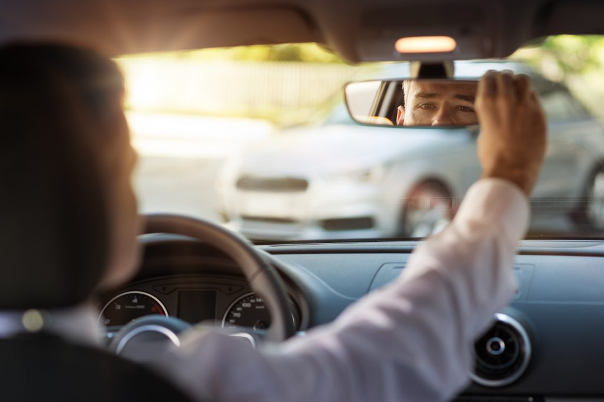
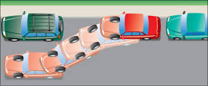

1.Position your car - Slowly steer your car so that it is parallel to the car parked in front of the empty space. Your car should be 2-3 feet from the side of the parked car.
2.Check your mirrors - Check your rear-view mirror, as well as your left and right side mirrors for other traffic. Once you are certain that there are no other vehicles in your blind spot, shift your car into reverse.
 3.Start backing up - Slowly begin to reverse your vehicle along the side of the parked car. Begin to turn your steering wheel to the right.
3.Start backing up - Slowly begin to reverse your vehicle along the side of the parked car. Begin to turn your steering wheel to the right.
4.Straighten the steering wheel - As your car moves into the empty parallel parking spot, slowly straighten your steering wheel as you continue to move backwards towards the parked car at the other end of the parking space. As you are maneuvering your vehicle, continuously check all mirrors and
through your windows and front windshield to ensure you are not in danger of hitting either of the vehicles bordering the parallel parking space.
 5.Begin turning your steering wheel to the left - Once the front of your vehicle has passed the back bumper of the vehicle in the parking spot in front of you, begin to turn your steering wheel to the left.
5.Begin turning your steering wheel to the left - Once the front of your vehicle has passed the back bumper of the vehicle in the parking spot in front of you, begin to turn your steering wheel to the left.
6.Check how close you are - Continuing to inch backwards in reverse and while beginning to straighten your steering wheel, look into your rear view mirror to see how close your vehicle is to the car in the parallel parking spot behind you.
7.Adjust your position - Once you have your vehicle straight and as close to the curb as possible, you may need to shift into forward to position your car so that there is an equal amount of space in front and behind your vehicle.
8.Put the car into reverse - To exit a parallel park, first put your car into reverse and back towards the car behind you. Back as close as you reasonably can without putting yourself in danger of hitting the other vehicle.
9.Turn your steering wheel to the left - Next, turn your steering wheel to the left and shift your car into forward. Check for traffic in the lane you are about to enter. Making sure that you are not too close to the back bumper of the vehicle parked in front of you, slowly drive out of the parallel park.
The ability to perform parallel parking is an extremely useful driving skill.
Being confident in your ability to parallel park with ease will save you from having to search for a regular parking space in which to place your vehicle. With a few tries, you should be able to get the feel of parallel parking and impress your driving instructor.
Get full "How to "Check the Easiest Parking Tutorial for Extra Confidence" video tutorial on this link https://youtu.be/l4LcfZeS4qw
2020 CopyRight